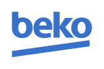

Naprawiamy zmywarki Beko w goleniowie i okolicach. Diagnoza usterek, szybka naprawa i gwarancja jakości.
Zamów Naprawę
W zmywarkach Beko, które są popularnymi urządzeniami w Goleniowie i okolicach, występują dwa główne rodzaje awarii, które mogą powodować problemy z ich prawidłowym funkcjonowaniem. Pierwszym z nich jest kod E1/E2 (Sygnał piskowy), który wskazuje na wyciek wody lub błąd czujnika zalania w misie. W takim przypadku należy sprawdzić stan pływaka lub czujnika wycieku, który może być uszkodzony lub zanieczyszczony. Uszkodzony pływak lub czujnik może powodować nieprawidłowe funkcjonowanie zmywarki, co skutkuje nieprawidłowym odprowadzaniem wody lub niegrzaniem wody. W takim przypadku konieczne jest usunięcie awarii i wymiana uszkodzonego elementu.
W przypadku kodu E3, który wskazuje na problem z nagrzewaniem wody, należy sprawdzić stan grzałki przepływowej. Grzałka przepływowa jest kluczowym elementem w procesie grzania wody w zmywarkach Beko. Jeśli grzałka jest uszkodzona lub zanieczyszczona, może powodować nieprawidłowe nagrzewanie wody, co skutkuje niegrzaniem wody lub zmywaniem zimną wodą. W takim przypadku konieczne jest usunięcie awarii i wymiana uszkodzonej grzałki.
W Goleniowie i okolicach nasz serwis oferuje szybkie i skuteczne rozwiązania dla problemów z zmywarkami Beko. Nasz zespół serwisowy jest wykwalifikowany i doświadczony w diagnozowaniu i naprawianiu awarii zmywarek. W przypadku wystąpienia awarii, nasz serwis może przyjechać do klienta w ciągu kilku godzin, aby szybko i efektywnie rozwiązać problem. Nasz zespół oferuje również porady diagnostyczne, aby pomóc klientom w identyfikacji i rozwiąz